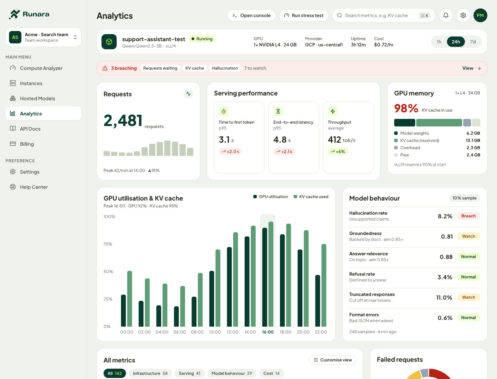
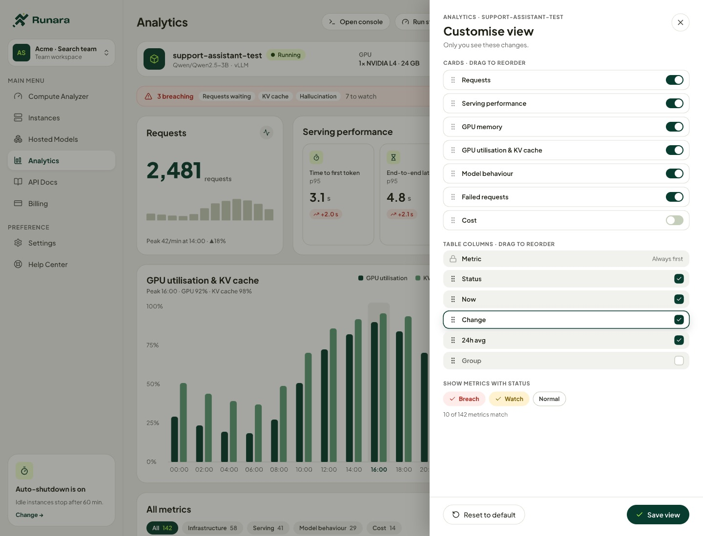

From raw metrics to fixes you approve
Runara is an AI deployment platform used by teams at companies including Meta and AMD. Our users could see every GPU and model metric for a deployment, but many of them weren't ML engineers, and the numbers didn't tell them what to do. Across three versions I took the product from showing metrics, to explaining them, to fixing them, with the user approving every fix.
- My role Sole designer, also acting as PM. I designed and built every version, and tested each one with beta users.
- Team Me, an engineer I smoke-tested each build with, and the CEO, CTO and engineers at the weekly review.
- Versions Version 0, Metrics. A customisable dashboard that didn't work. Version 1, Explain. Version 2, Fix, three months later.
- Outcome Explain and Fix both shipped to beta users. 64% engaged with the explanations, and in the Fix version 83% went on from explanation to Fix.
Every metric, and no answer.
I built the first version to show everything. Every infrastructure, serving and model-behaviour metric for a deployment sat on one screen, grouped and searchable, hallucination rate included.
That works for an ML engineer. Many of our beta users weren't ML engineers. They could see the numbers, but the numbers didn't tell them what was wrong or what to do about it.

Fig 1. Version 0. Every metric for one deployment, grouped and searchable. Sample data.
A dashboard each team could make its own.
My first answer was more control. Different teams needed different metrics, so I designed a customisable dashboard, inspired by Datadog's: each team could choose which cards and metrics it saw.
It didn't work. Users weren't comfortable reading the metrics in the first place, and there were so many that they were overwhelmed. A dashboard they could customise gave them more decisions about numbers they couldn't read.

Fig 2. The customisable view. Cards and columns on or off, and a status filter. Sample data.
Answers with reasons, instead of metrics.
In Version 1 an AI agent reads the deployment's GPU and model-behaviour metrics, including hallucination rate. The screen opens with one sentence on what's wrong. Below it, issues are ranked critical, high, medium and low, and each gives its cause, impact and fix in short labelled lines.
The agent's reasoning stays collapsed. Anyone who wants to check it opens "Show reasoning" and sees, step by step, how the agent got there. Follow-up questions go to Ask Runara.
The metrics didn't disappear. They moved one tab away, to a view the CTO and I cut down to the few metrics users relied on, with the rest behind search.
Fig 3. Version 1 in the demo: the summary, Ask Runara, the Metrics tab, and the reasoning behind an issue. 41 s, no sound. Sample data.
Three months later, a fix you approve.
Version 1 told people what to fix. Three months later, Version 2 could make the fix. Issues Runara can change get a Prepare fix button. The rest get step-by-step instructions.
Fig 4. Version 2 in the demo: prepare, test on a copy, review, approve, and check that it holds. Then a second fix. 60 s, no sound. Sample data.
Every screen opens with one verdict.
People who can't read the metrics won't read paragraphs about them either. So I wrote rules for how the Analytics screens are written, and designed every screen to them. Four of the eight:
It was a reading problem, not a layout problem.
Explain and Fix both shipped to beta users. In Explain, 64% engaged with the explanations by expanding the agent's reasoning. In Fix, 83% went on from explanation to Fix. The two numbers measure different things in different versions, so I don't compare them.
The dashboard that didn't work taught me the most. I treated the problem as a layout problem, and gave people more control over numbers they couldn't read. Fewer numbers, read for them, is what the next two versions were built on.